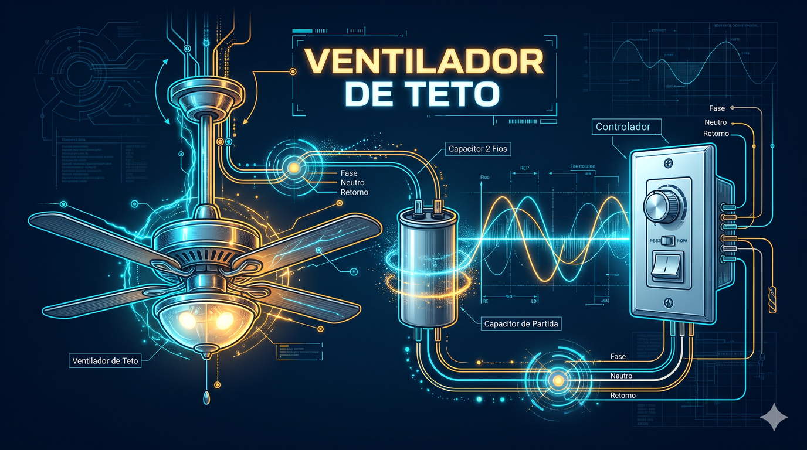
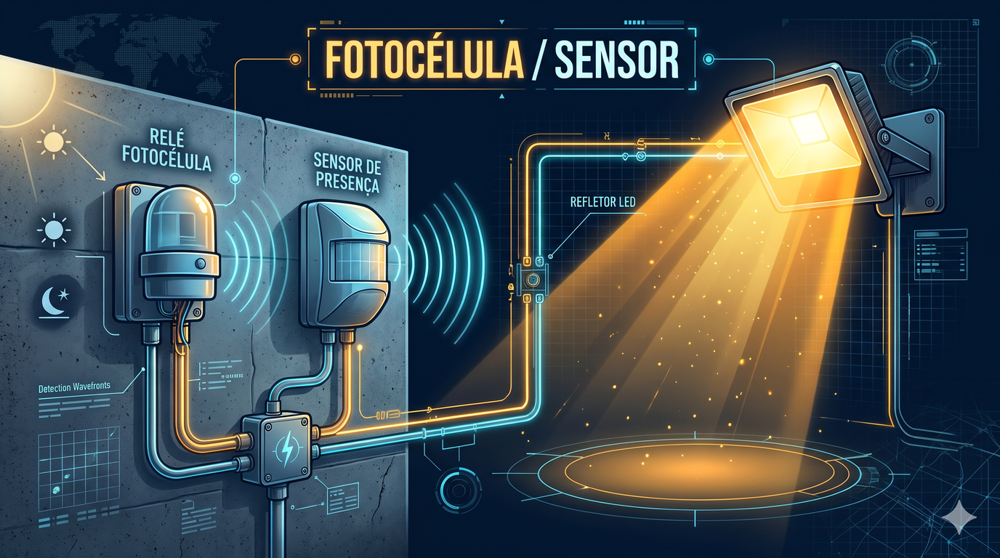

Ligue a Fase no borne CENTRAL (C) do primeiro interruptor Three-Way.
Passe 2 fios de retorno ligando os bornes laterais (1 e 2) do primeiro interruptor diretamente nos laterais (1 e 2) do segundo.
Do borne CENTRAL (C) do segundo interruptor, leve 1 fio de retorno até o centro do bocal da lâmpada.
Ligue o Neutro direto na rosca lateral da lâmpada.
Erro clássico: Nunca ligue Fase e Neutro no mesmo interruptor paralelo (chamada "ligação caipira"). Além de fora de norma, pode dar curto na troca de tecla e deixar o bocal energizado com a luz apagada.
Esquema Four-Way (Intermediário)
Nas duas pontas do circuito sempre vão interruptores Three-Way (3 bornes).
Os 2 retornos que saem do primeiro Three-Way entram nos 2 bornes de ENTRADA do Four-Way.
Dos 2 bornes de SAÍDA do Four-Way saem 2 retornos para os laterais do último Three-Way.
Se precisar de 4 ou 5 pontos, basta intercalar mais módulos Four-Way no meio dos retornos.
Dica de campo: Antes de apertar os parafusos, olhe o desenho gravado atrás do Four-Way. Algumas marcas usam entrada nos bornes do meio e saída nas pontas; outras usam lado esquerdo/direito.

Ventilador de Teto (Capacitor 2 Fios + Lâmpada)
Ligue o Neutro da rede no fio Comum do motor (geralmente branco ou preto — confira o manual) e em um dos fios da lâmpada.
Ligue os 2 fios do capacitor em paralelo nos outros 2 fios do motor (Ventilar e Exaustor).
Na caixinha da parede, leve a Fase para o comum da chave da lâmpada e para a entrada do controle do ventilador.
Suba 3 retornos da caixinha até o teto: 1 para a lâmpada e 2 para cada ponta do capacitor (Ventilar / Exaustor).
E se o capacitor for de 3 fios (controle de 3 velocidades)?
O capacitor fica dentro da caixinha da parede (em série com a chave de velocidades), e os 2 retornos de Ventilar/Exaustor sobem direto para o motor. O fio comum do capacitor (geralmente preto/vermelho) liga na chave reversora e os outros 2 fios fazem as velocidades Mínima e Média.
Ventilador girando fraco ou só zumbindo? Em 90% dos casos é capacitor seco/fraco (perdeu capacitância em µF) ou ligação invertida do fio comum do motor.
Boia Elétrica (Caixa Superior + Cisterna)
Teste com multímetro (continuidade) antes de subir no telhado: identifique o fio Comum (normalmente Preto).
Para ENCHER (Caixa Superior): use o par de fios que apita com a boia caída para baixo (contato NF). Isole muito bem o 3º fio que sobrar.
Para PROTEGER BOMBA (Cisterna): use o par que apita com a boia levantada (contato NA). Se a cisterna secar, ela corta a fase e salva a bomba.
Se usar apenas 1 boia (só caixa superior), leve a Fase direto no Comum dela e a saída para a bomba.
Regra de ouro em campo: Para bombas acima de 1/2 CV (ou qualquer bomba 220V bifásica/trifásica), NUNCA passe a corrente da bomba direto pela boia — use a boia apenas para acionar a bobina (A1) de um contator com relé térmico!

Fotocélula 3 Fios & Sensor de Presença
Fio (Padrão 3 fios)
Onde Ligar
Preto (ou Marrom)
Fase da rede (saída do disjuntor)
Branco (ou Azul)
Neutro da rede + um polo da lâmpada
Vermelho (ou Amarelo)
Retorno direto no outro polo da lâmpada
E na Fotocélula de 4 fios? Dois fios são entrada de alimentação (Fase + Neutro) e os outros dois vão direto para a lâmpada/refletor. Dica para não piscar: Nunca aponte a fotocélula para a própria lâmpada que ela acende, senão ela entra em ciclo infinito (acende → vê luz → apaga → escurece → acende).